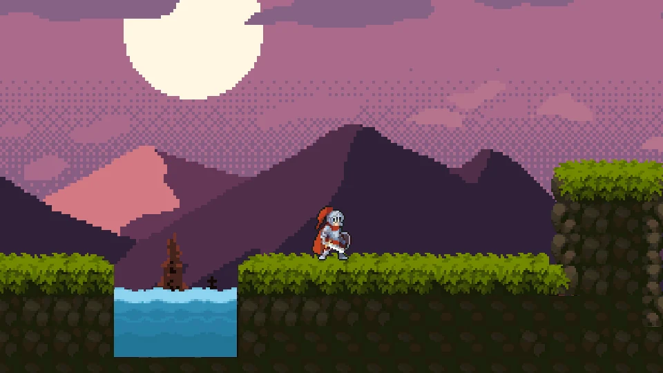
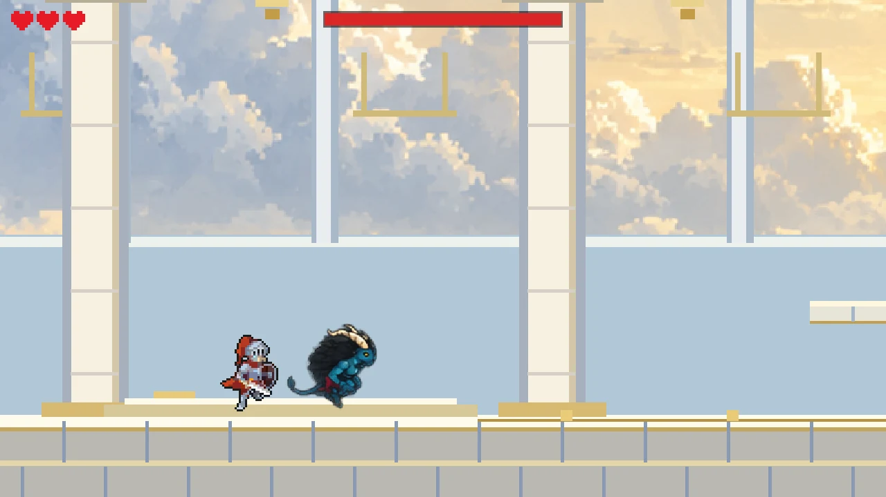
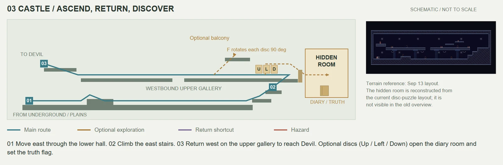

让和解落实到战斗
发现的问题
原版本的和解停留在对白，最终战仍是单人面对敌人，叙事与玩法脱节。
做出的调整
加入魔王同伴模式：玩家操控勇者，魔王自动跟随并使用爪击和火球。关系变化成为战斗中的实际协作。

01 / 玩家体验
力量与真相是两条独立的线：是否保留赐福、是否看见隐藏的往事，共同改变最后的选择。
02 / 设计重点
勇者在特定区域败北时，控制权可能交给仍活着的狼或魔王。镜头、碰撞与门禁跟随角色切换，玩家继续面对同一个世界，而非只回到读档界面。
前期勇者受普通攻击只被击退、不掉生命；破坏神像后，赐福消失，三心生命条让普通攻击重新变得危险。地形危险始终有效，力量并不等于绝对安全。
圆形、箭形与折线线索分布在不同区域，玩家需要观察和记忆。城堡里的可旋转石盘通往隐藏房间与日记，让探索改变对故事的理解。
神像与隐藏真相分别影响力量和认知，战斗结果进一步分流。地下城的门首次从内侧解锁后，与森林树洞形成双向捷径，使回访和补充探索有空间依据。
03 / 项目画面



04 / 真实迭代
发现的问题
原版本的和解停留在对白，最终战仍是单人面对敌人，叙事与玩法脱节。
做出的调整
加入魔王同伴模式：玩家操控勇者，魔王自动跟随并使用爪击和火球。关系变化成为战斗中的实际协作。
发现的问题
狼在森林倒下后，缺少能继续的流程，失败成为中断。
做出的调整
补成“燃烧的家园”结局，原生 20 秒演出后回到菜单，让失败也表达角色与家园的关系。
05 / 当前版本
可在 itch.io 浏览器游玩，也提供 Windows 下载。游戏支持简体中文与英语；页面保留核心设计介绍，具体结局留给玩家发现。